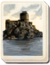
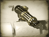

Requires
- Arts: 
Enables
- Buildings: 
Basic Building Statistics (can be modified by difficulty level, arts, skills, traits and retainers)
- Cost: 4000
- Upgrades castle defences on the battlefield to matchlock towers
Description
Fire and death are the rightful reward of foolish attackers.
Matchlock towers improve defences by allowing the defenders to pepper attacking soldiers with heavy, if somewhat slow, gunfire. Matchlocks are a very simple kind of firearms, with smoothbore barrels and a very simple firing mechanism. They are muzzle-loaders, which means that powder and ball must be rammed down the barrel, and a pan at the breech end of the barrel, with a small hole to main charge, primed with gunpowder. This is quite risky for the firer, as the match is a slow-burning cord, soaked in flammable chemicals: gunpowder and fire do not mix terribly well in the hands of the careless! When the trigger is pulled, the match, held by a lever, is touched to the pan. The priming catches, the fire flashes through to the breech, and the gun goes off. In wet conditions, this doesn't always happen. In dry conditions it may not work either, and the gunner is left with the ticklish business of re-priming his matchlock, not knowing whether it will suddenly go off in his face, a "hang fire". It is not surprising that matchlocks were abandoned in most of the world in favour of flintlocks and then percussion cap weapons. Modern firearms avoid all these problems by using a cartridge that integrates primer, powder charge, and bullet in one waterproof unit.